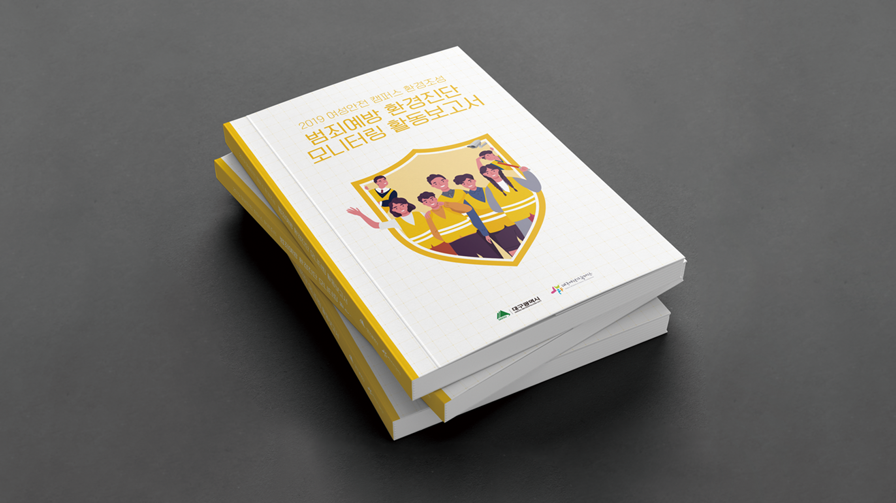
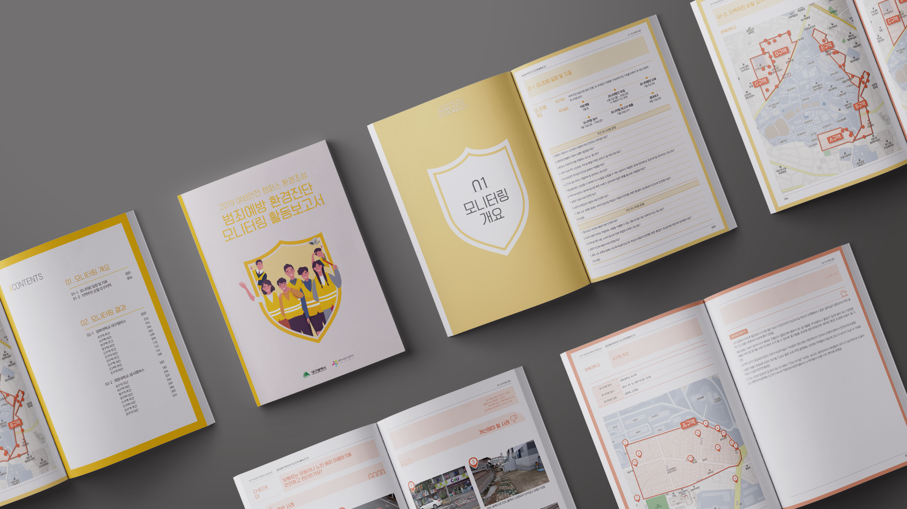
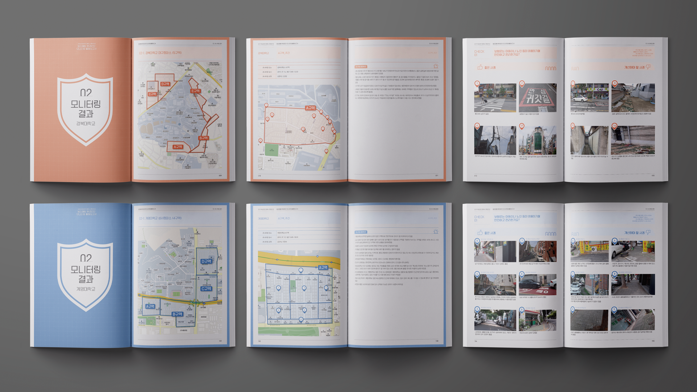

범죄예방 환경진단
모니터링 활동보고서
대구 여성의 캠퍼스 안전을 위해 활동하는
모니터링단의 2019년 활동보고
Concept
안전을 의미하는 노란색과 안전 표시 모양을 표지에 배치하여 안전한 느낌을 표현하였고, 모니터링을 진행한 두 개의 캠퍼스의 상징색을 사용하여 각 탭을 구성하였다.


모니터링 결과를 GOOD과 BAD로 나누어 펼침면 각 장에 정리하여 모니터링 결과를 한 눈에 확인할 수 있도록 편집하였다.
